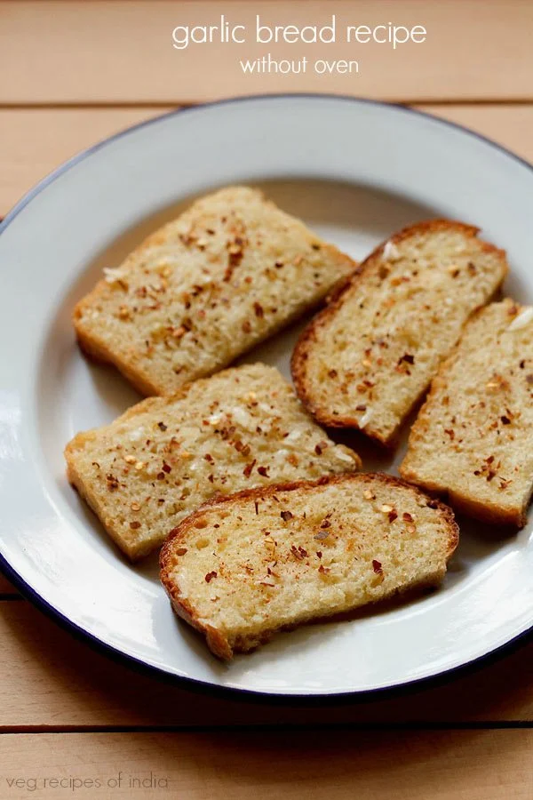

Garlic Bread

Description
Garlic bread is a versatile dish that pairs well with a variety of meals, especially Italian cuisine like pasta dishes, pizza, and lasagna. Its simple yet delicious combination of flavors and textures makes it a beloved comfort food around the world.
Garlic bread is a popular side dish or appetizer consisting of bread, typically a baguette or similar loaf, that has been topped or slathered with a mixture of garlic and butter or olive oil. It is often seasoned with herbs like parsley, oregano, or chives, and sometimes includes cheese, such as mozzarella or Parmesan, which is melted over the top.
Ingredients
- 4 to 5 slices bread
- 2 tablespoon Butter
- 3 to 4 garlic cloves
- 100 grams mozzarella cheese
- ¼ teaspoon ground black pepper
- ¼ teaspoon red chili flakes
- ½ teaspoon dry oregano
- salt
Steps
- Now spread the garlic butter evenly on all the slices.
- Top with the cheese generously.
- Sprinkle with your favorite herb or spice. You can add oregano, basil, red chili flakes, black pepper, Italian seasoning etc.
- Place the bread slices in a baking tray.
- Now keep the baking tray on the top most rack of your oven. If using a microwave oven in the convection mode, then keep the baking tray on the glass turn table.
- Bake at 200 degrees C/392 degrees F for 5 to 6 minutes or till the edges become a light golden and a bit crisp.
- The cheese will also melt. You don't need to toast these slices.
- Serve these Garlic Cheese Bread hot with tomato ketchup as a starter or as as a snack.
Home